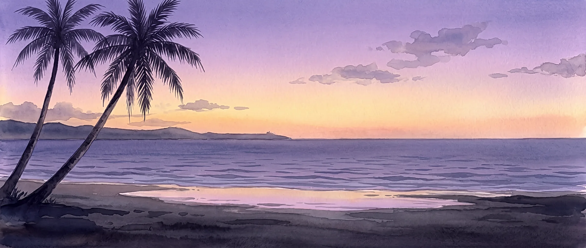
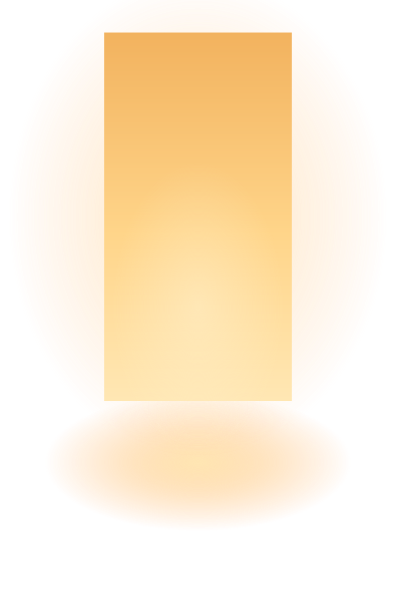
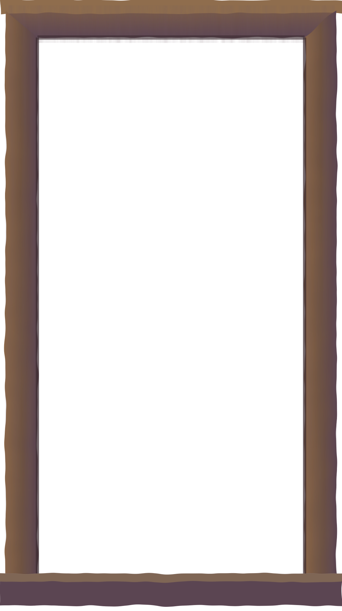
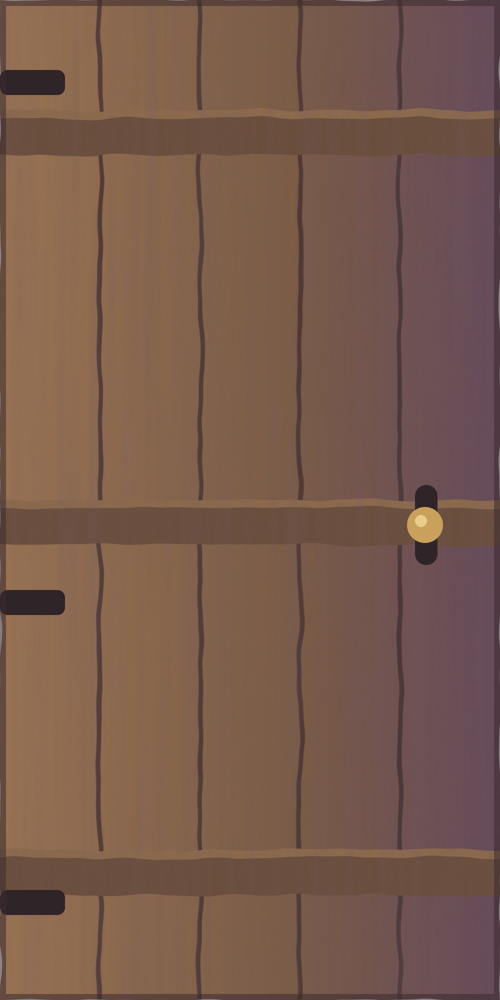

Namit Gid · Filipino food in North York
Kumain ka na? Tara, nagluto ako.
Have you eaten? Come, I cooked.
~Leny
Follow your nose. Lift a lid to see what’s inside.


Simple lang. Order ahead, and I’ll cook it fresh for you.
- 1Fill your tray and pick a time, at least a day ahead. I buy everything fresh for your order.
- 2I’ll message you within the hour. If I can make it, send half by e-Transfer so I can go shopping. If I can’t, I’ll tell you and we’ll find another day.
- 3Come pick it up warm near Fairview Mall, and pay the rest then, cash or e-Transfer. Salamat!